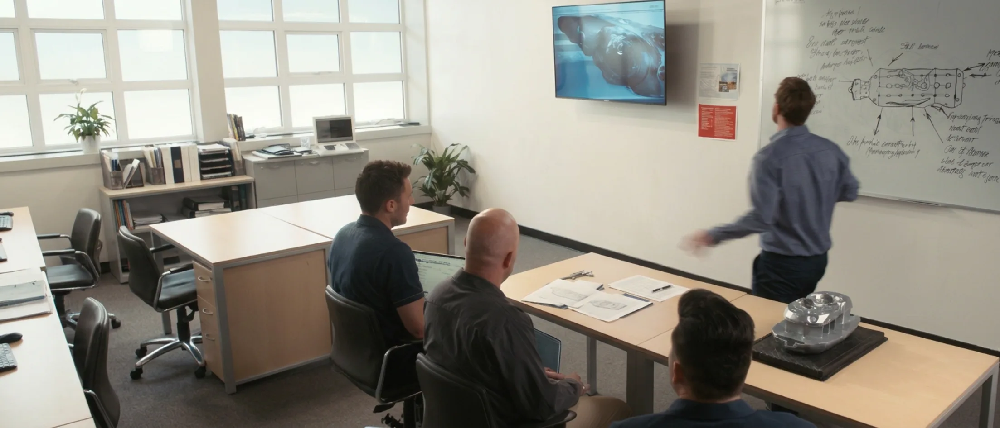

도입을 검토 중인 고객
우리 제품과 오염물에 드라이아이스 세척이 맞는지 먼저 확인하고 싶을 때 문의해 주세요. 시료 테스트로 세척 결과와 적합한 장비를 확인해 드립니다.
데모 테스트 안내 →
기술지원은 세척 대상에 맞는 조건과 장비 구성을 찾는 일입니다. 장비 도입을 검토할 때, 새로운 세척 대상이 생겼을 때, 결과가 전과 달라졌을 때, 생산 라인에 적용하려 할 때 문의해 주세요.
하남 연구소에서 시료로 직접 확인하고, Cold Jet이 전 세계에서 쌓은 적용 경험과 데이터를 함께 활용합니다.
장비 이상과 수리는 A/S에서 접수합니다. 기술지원은 세척 결과가 기대에 못 미치거나, 처음 해 보는 대상과 공정을 검토해야 할 때 문의하는 창구입니다. 장비를 구입하기 전에도 이용할 수 있습니다.
우리 제품과 오염물에 드라이아이스 세척이 맞는지 먼저 확인하고 싶을 때 문의해 주세요. 시료 테스트로 세척 결과와 적합한 장비를 확인해 드립니다.
데모 테스트 안내 →새로운 세척 대상이 추가되었거나, 오염물이나 모재가 바뀌었거나, 전보다 결과가 떨어졌을 때 문의해 주세요. 보유 장비와 노즐로 가능한지, 무엇을 바꿔야 하는지 안내해 드립니다.
지원 영역 보기 →수주한 현장의 대상과 오염 상태를 보내 주시면 장비, 노즐, 조건과 예상 드라이아이스 소비량, 압축공기 요구량을 미리 산정해 드립니다.
인증 파트너 안내 →로봇 셀이나 생산 라인에 드라이아이스 세척을 적용할 때 필요한 장비 인터페이스, 노즐 경로, 펠렛 공급, 집진 및 환기, 안전 인터록 정보를 제공합니다.
자동화 시스템 보기 →영역 이름 아래에는 자주 받는 질문을 적었습니다. 오른쪽으로 가면서 문의하는 경우, 바테크가 하는 일, 받으시는 자료를 순서대로 확인할 수 있습니다.
“금형 표면을 상하게 하지 않고 이형제만 지울 수 있을까요?”
장비, 노즐, 압력, 공급량, 작업 거리와 예상 작업 속도, 세척 전후 사진 및 영상
“생산 중에 세척하려면 드라이아이스와 공기가 얼마나 필요한가요?”
사이클 타임, 소비량, 압축공기 사양, 공급 방식 비교와 권장 구성
“로봇으로 금형 세척을 자동화하려면 무엇을 준비해야 하나요?”
바테크 제작 설비 →장비, 노즐, 공급, 유틸리티 구성과 SI 측에 필요한 기술 자료
“밀폐된 공간에서 드라이아이스로 세척해도 안전한가요?”
환기, 보호구, 작업 구역, 오염물 처리 항목과 현장별 권장 사항
Cold Jet은 1988년부터 60개국 이상에 24,000대가 넘는 장비를 설치하며 산업별 적용 경험과 데이터를 쌓아 왔습니다. 국내 현장에 블라스터를 적용할 때에도 이 데이터를 활용하는 경우가 많습니다.

바테크는 Cold Jet 대한민국 공식 대리점으로서 Cold Jet의 적용 사례와 기술 자료를 직접 활용합니다. 바테크 기술지원 담당자는 Cold Jet의 공식 교육을 매년 정기적으로 받고 있습니다.
Cold Jet 관련 수치는 Cold Jet 공식 사이트의 공개 자료 기준입니다(2026년 11월 확인).
기술지원에 대해 자주 문의하시는 내용을 정리했습니다. 이외의 사항은 바테크 기술지원 담당자에게 문의해 주세요.
네. 도입을 검토하는 단계에서도 문의하실 수 있습니다. 세척 대상과 오염 상태를 알려 주시면 적용 가능성을 먼저 검토하고, 필요하면 데모 테스트로 실제 세척 결과를 확인해 드립니다.
시료 발송과 하남 연구소 방문 테스트는 무료로 진행합니다. 다만 시료가 많거나 시간이 오래 걸리는 경우에는 일부 비용이 발생할 수 있습니다. 현장 방문 테스트는 유료이며, 거리와 일정, 작업 조건에 따라 비용을 안내해 드립니다.
장비 이상과 수리는 A/S에서 접수합니다. 교육 및 A/S 페이지의 접수 안내를 확인해 주세요. 기술지원은 장비는 정상인데 세척 결과가 기대에 못 미치거나, 새로운 대상과 공정을 검토할 때 이용하는 창구입니다.
검토 내용에 따라 조건 시트, 적용 검토서, 구성안, 안전 체크리스트 중 해당하는 자료로 정리해 드립니다. 시료 테스트를 진행한 경우에는 세척 전후 사진과 영상, 테스트 조건을 함께 전달합니다. 고객의 동의 없이 사진이나 영상을 외부에 공개하지 않습니다.